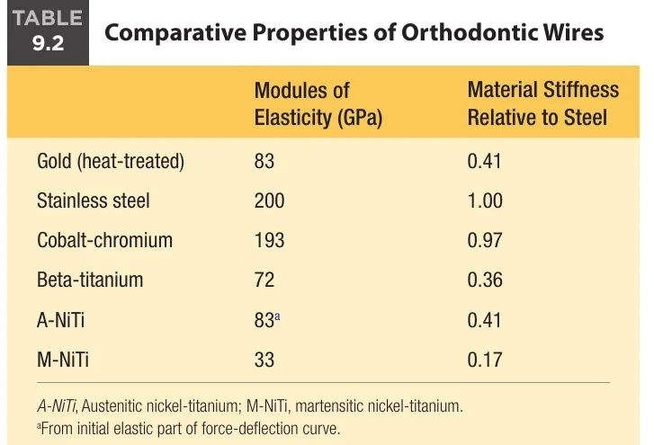

نسخه استخراجشده؛ ترجمه یا تأیید علمی انجام نشده است. وضعیت: captured
هر سیم ارتودنسی را با سه عدد میشناسیم. این سه، مستقل نیستند و رابطهای ساده آنها را به هم میبندد.
| خاصیت | یعنی چه | در بالین |
|---|---|---|
| Strength (استحکام) | حداکثر نیرویی که سیم میتواند بدهد | چقدر میتواند کار کند |
| Stiffness (سفتی) | شیب منحنی نیرو-تغییرشکل | چقدر نیرو بهازای هر میلیمتر |
| Range (دامنه) | تا چه حد خم شود و برگردد | چقدر بینظمی را تحمل میکند |
💡 رابطهی کلیدی: Strength = Stiffness × Range
معنای بالینی این ضرب مهم است: استحکام یک سیم را میتوان از دو راه کاملاً متفاوت به دست آورد. سیمی سفت با دامنهی کم، و سیمی نرم با دامنهی بلند، ممکن است استحکام یکسانی داشته باشند اما رفتار بالینیشان هیچ شباهتی به هم ندارد.
در فاز تراز، سفتی کم و دامنهی بلند میخواهیم؛ در فاز پایانی، درست برعکس. پس هیچوقت سیم را با یک عدد نسنج.

اگر میشد سیم دلخواه را سفارش داد، فهرست خواستهها این بود:
⚠️ هیچ سیمی همهی اینها را با هم ندارد و این تصادفی نیست: چند مورد از این خواستهها ذاتاً با هم در تضادند. رزیلینس بالا و دامنهی بلند معمولاً با فرمپذیری پایین میآیند، و سیمی که خوب خم میشود معمولاً سفت است.
👉 پاسخ ارتودنسی به این تضاد، جستوجوی سیم کامل نیست — توالی سیم است. در هر فاز، آلیاژی به کار میرود که خواستهی همان فاز را برآورده کند.
پیش از انتخاب آلیاژ، دو متغیر هندسی وجود دارند که اثرشان بر رفتار سیم از خودِ جنس آن هم بیشتر است.
برای سیم گرد:
هر دو رابطه توانیاند، نه خطی — و همین است که آنها را به دو اهرم قدرتمند تبدیل میکند. تفاوت میان سیم ۰٫۰۱۶ و ۰٫۰۱۸ در نگاه اول ناچیز به نظر میرسد، اما سفتی — و نیرویی که به دندان میرسد — حدود ۱٫۶ برابر میشود.
👉 به همین دلیل لوپ میزنیم: لوپ طول مؤثر سیم میان دو براکت را زیاد میکند و در نتیجه نیرو را بهشدت سبکتر و دامنه را بیشتر میکند — بدون آنکه آلیاژ عوض شود.
در سیم مستطیلی، بُعدی که در جهت خم قرار میگیرد تعیینکنندهی اصلی رفتار سیم است؛ به همین دلیل ۰٫۰۱۹×۰٫۰۲۵ و ۰٫۰۱۷×۰٫۰۲۵ رفتار متفاوتی دارند.